hiGit 사용법
hiGit은 Git을 몰라도 파일의 버전을 저장하고, 비교하고, 되돌릴 수 있게 해 주는 앱이에요. 화면의 낱말에 마우스를 올리면 Git에서 부르는 원래 이름이 보여요.
1. 설치하기
hiGit은 컴퓨터에 설치된 Git을 써요. Git이 없으면 앱이 처음 켤 때 내려받는 곳을 알려 줘요.
Windows
- Git for Windows를 먼저 설치해요.
hiGit_버전_x64-setup.exe를 실행해요. 관리자 확인 없이 지금 사용자에게만 설치돼요.- "Windows의 PC 보호" 창이 뜨면 추가 정보를 누른 뒤 실행을 눌러요. 아직 서명하지 않은 시험판이라 뜨는 창이에요.
Ubuntu
- 터미널에서
sudo apt install ./hiGit_버전_amd64.deb를 실행해요. Git도 함께 설치돼요. - AppImage를 쓰려면
libfuse2와 Git을 설치하고, 파일에 실행 권한을 준 뒤 더블클릭해요.
2. 처음 켜기와 이름·이메일
저장한 버전마다 누가 저장했는지 남아요. 처음 한 번 이름과 이메일을 정해요.
- 앱을 켜면 "버전에 남길 이름부터 정해요"가 보여요.
- 이름과 이메일을 쓰고 저장해요. 나중에 설정의 "일반"에서 바꿀 수 있어요.
- GitHub를 쓸 거라면 GitHub 연결을 눌러요. 나중에 해도 돼요.
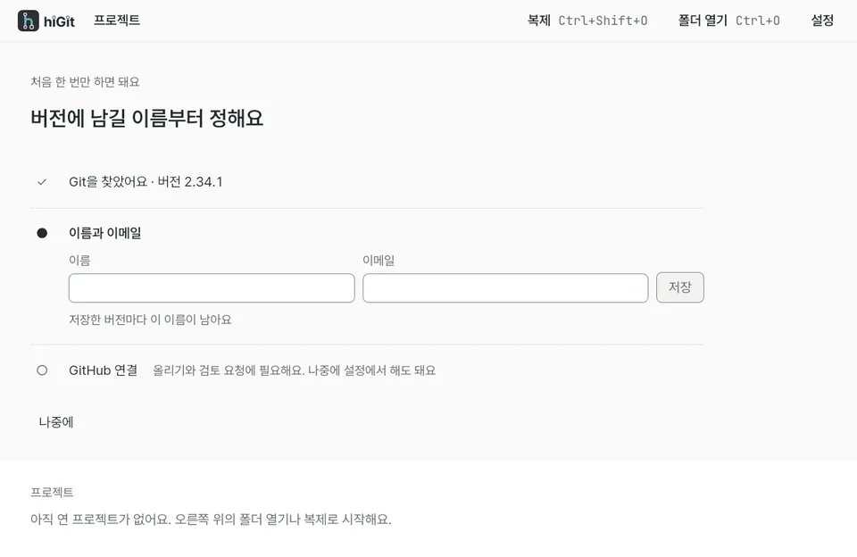
3. 폴더 열기와 복제
hiGit에서는 폴더 하나가 프로젝트 하나예요. 이미 있는 폴더를 열거나, 인터넷의 저장소를 내 컴퓨터로 받아요.
- 오른쪽 위의 폴더 열기를 누르거나 Ctrl+O를 눌러 폴더를 골라요.
- 아직 버전 관리를 하지 않는 폴더면 버전 관리 시작init을 눌러요. 파일은 그대로 두고 기록만 시작해요.
- GitHub 같은 곳의 저장소를 받으려면 복제clone를 누르거나 Ctrl+Shift+O를 눌러 주소와 저장할 곳을 정해요.
앱을 다시 켜면 마지막으로 연 프로젝트가 바로 열려요. 다른 프로젝트는 왼쪽 위 프로젝트 이름을 눌러 골라요. 설치한 앱은 폴더를 오른쪽 클릭했을 때 나오는 Git으로 관리로도 열 수 있어요.
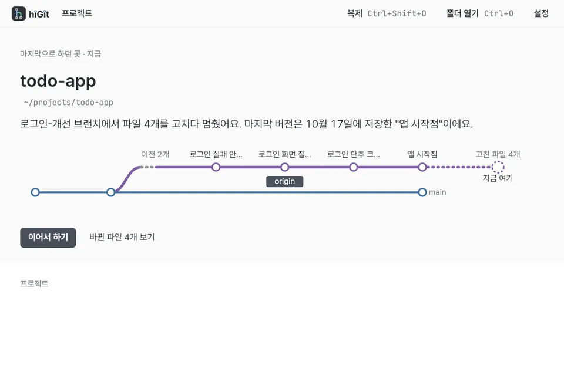
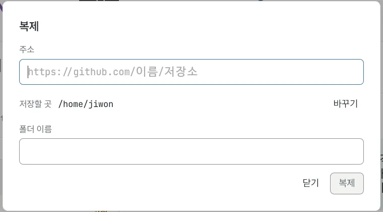
4. 버전 저장
파일을 고친 뒤 지금 모습을 한 버전으로 남기는 일이에요. 언제든 그 버전으로 돌아갈 수 있어요.
- 홈 왼쪽 변경 사항status에 고친 파일이 보여요.
- 이번 버전에 넣을 파일만 체크해요. 아무것도 고르지 않으면 모두 넣어요. 이것을 이번 버전에 넣기stage라고 해요.
- 위의 메시지는 고친 파일 이름으로 미리 채워져 있어요. 무엇을 했는지 알아보기 쉽게 고치고, 필요하면 설명 추가에 더 적어요.
- 버전 저장commit을 누르거나 Ctrl+Enter를 눌러요.
저장하면 아래에 "되돌리기"가 있는 알림이 떠요. 바로 취소하고 싶으면 그 단추나 Ctrl+Z를 눌러요.
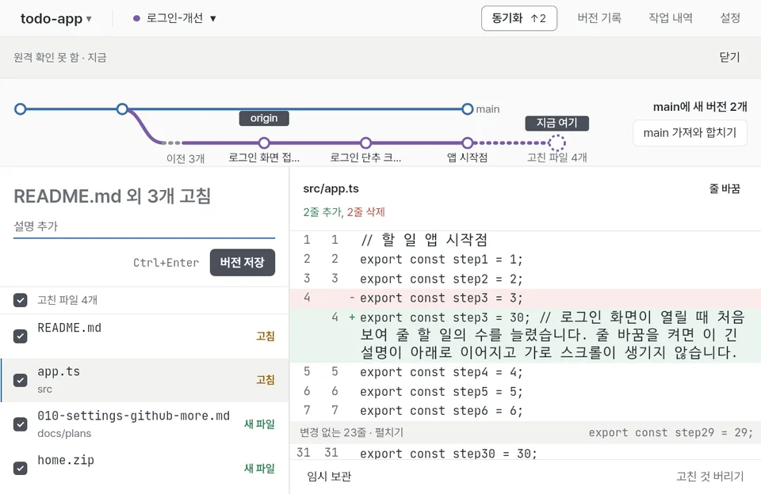
5. 비교 보기
마지막으로 저장한 버전과 지금 파일이 무엇이 다른지 보여 줘요.
- 고친 파일 목록에서 파일을 누르면 오른쪽에 비교 보기diff가 열려요.
- 초록 줄은 새로 쓴 줄, 빨간 줄은 지운 줄이에요. 줄 앞에 + 와 − 도 함께 보여요.
- 바뀌지 않은 줄은 "변경 없는 N줄 · 펼치기"로 접혀 있어요. 누르면 펼쳐져요.
- 긴 줄이 잘리면 오른쪽 위 줄 바꿈을 켜요.
파일을 오른쪽 클릭하면 폴더에서 보기, 기본 앱으로 열기, 경로 복사, 고친 것 버리기restore가 있어요. 실행할 수 있는 파일은 기본 앱으로 열지 않아요.
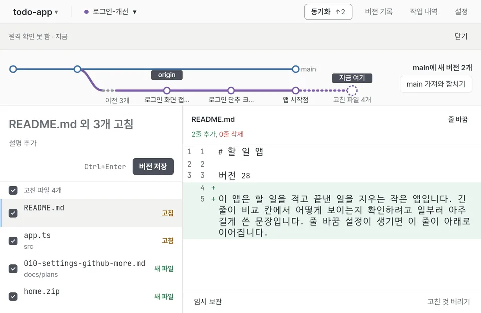
6. 버전 기록 노선도
지금까지 저장한 버전을 지하철 노선도처럼 보여 줘요. 브랜치는 노선, 버전은 역이에요.
- 위의 버전 기록log을 누르거나 Ctrl+H를 눌러요. Esc를 누르면 홈으로 돌아와요.
- 역을 누르면 작은 메뉴가 열려요. 이때 파일 보기, 여기서 새 브랜치, 되돌리기가 있고, 더 보기에 이 버전으로 돌아가기같은 일이 더 있어요.
- − 모든 버전 +로 주요 버전만 보거나 모두 볼 수 있어요.
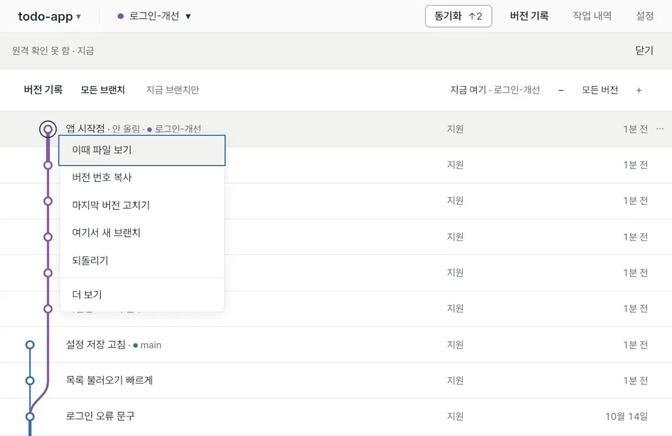
7. 되돌리기와 작업 내역
앱에서 한 일은 대부분 되돌릴 수 있어요. 실수했으면 먼저 Ctrl+Z를 눌러 보세요.
- 방금 한 일은 알림의 되돌리기나 Ctrl+Z로 되돌려요. 다시 하려면 Ctrl+Shift+Z를 눌러요.
- 더 예전 일은 위의 작업 내역reflog을 누르거나 Ctrl+Shift+H를 눌러 찾아요.
- 카드의 이 시점으로 되돌리기를 누르면 지금 브랜치가 그때 버전으로 돌아가요. 고친 파일은 그대로 남아요.
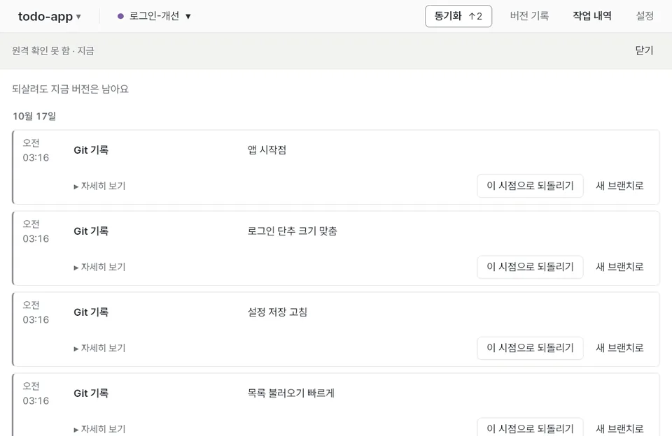
8. 브랜치 만들기와 바꾸기
브랜치branch는 같은 프로젝트에서 따로 작업하는 길이에요. 새 기능을 만들 때 브랜치를 나누면 원래 작업을 망가뜨리지 않아요.
- 왼쪽 위 브랜치 이름을 누르거나 Ctrl+B를 눌러 브랜치 목록을 열어요.
- 찾기 칸에 새 이름을 쓰고 새 브랜치로를 누르면 만들고 바로 옮겨 가요.
- 다른 브랜치를 누르면 그 브랜치로 바꿔요. 고친 파일이 있으면 "새 브랜치로 옮기기"와 "여기 두기" 중에서 고르게 물어요.
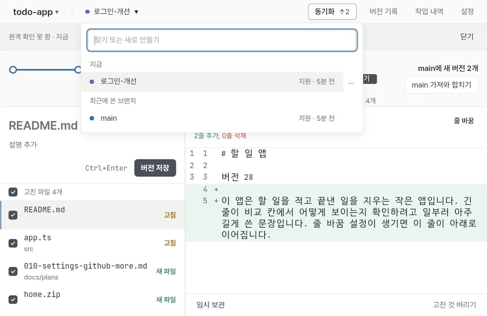
9. 합치기와 충돌 해결
다른 브랜치에서 한 일을 지금 브랜치로 가져오는 일이 합치기merge예요.
- 홈 노선도 오른쪽에 "main에 새 버전 N개"와 main 가져와 합치기가 보이면 눌러요. 브랜치 목록에서도 합칠 수 있어요.
- 두 브랜치가 같은 줄을 다르게 고쳤으면 충돌이 나고 충돌 해결 화면이 열려요.
- 한 곳씩 남길 쪽을 골라요. 내 브랜치ours나 합칠 브랜치theirs 카드의 이걸로, 또는 둘 다 쓰기나 직접 고치기를 눌러요. 아래 "저장될 모습"이 바로 바뀌어요.
- 모든 곳을 고르면 합치기 마치기를 눌러요. 그만두고 싶으면 언제든 합치기 그만두기를 눌러요.
단축키 1 2 3로 고르고 Ctrl+↑ Ctrl+↓로 앞뒤 곳으로 옮겨요. 앱을 껐다 켜도 고른 것이 남아 있어요.
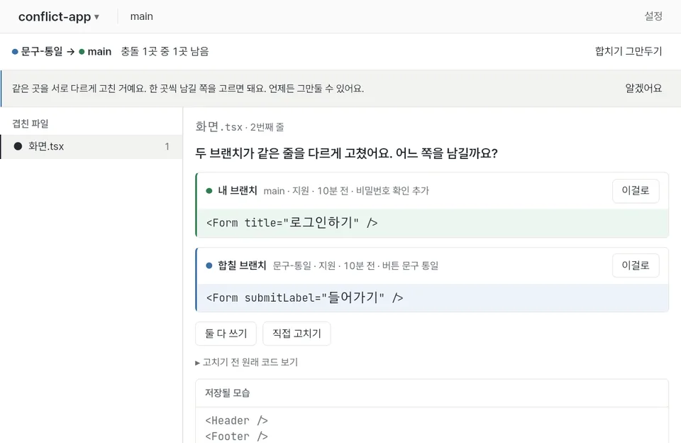
10. 임시 보관
아직 버전으로 저장하기엔 이른 고친 내용을 잠깐 치워 두는 곳이에요.
- 홈 아래의 임시 보관stash을 누르면 고친 파일이 보관되고 파일은 마지막 버전 모습으로 돌아가요.
- 다시 꺼내려면 작업 내역에서 그 카드의 꺼내기를 눌러요.
- 브랜치를 바꿀 때 고른 "여기 두기"도 같은 방법으로 그 브랜치에 고친 파일을 두고 가요. 그 브랜치로 돌아오면 꺼낼 수 있어요.
11. GitHub 연결과 동기화
GitHub에 연결하면 내 버전을 인터넷 저장소에 올리고, 다른 사람이 올린 버전을 받아요.
- 설정의 "GitHub"에서 연결을 누르면 브라우저에서 코드를 넣는 페이지가 열려요. 화면에 보인 코드를 넣고 허락해요.
- 위의 동기화sync를 누르면 새 버전을 가져온 다음 내 버전을 올려요. 단추 옆 ↑ 숫자는 올릴 버전 수예요.
- 원격 저장소가 없는 프로젝트는 GitHub에 올리기로 새 저장소를 만들어 올려요.
앱은 몇 분마다 조용히 원격 확인fetch을 해서 받을 버전이 있는지 알려 줘요.
설정에 "이 앱에는 GitHub 연결이 준비되지 않았어요"가 보이면 그 설치 파일에는 GitHub 연결이 들어 있지 않은 거예요. 그때도 원격 저장소 주소로 동기화는 할 수 있어요.
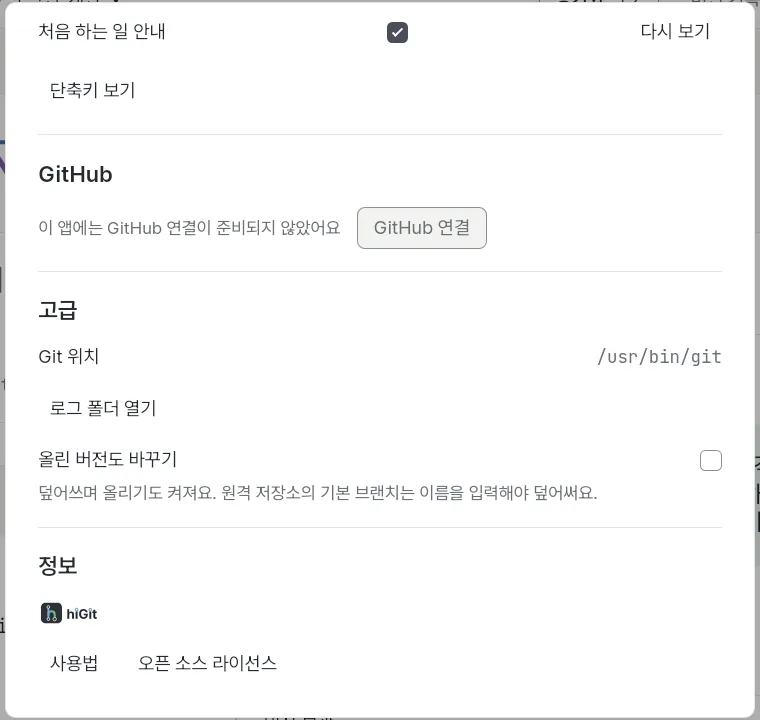
12. 검토 요청
브랜치에서 한 일을 다른 사람에게 보여 주고 합쳐 달라고 부탁하는 일이에요. GitHub 원격이 있는 프로젝트에서 써요.
- 위의 검토 요청Pull Request을 눌러 목록을 열어요.
- 새 검토 요청에서 제목과 설명을 쓰고 합칠 브랜치를 골라요. 아직 올리지 않았으면 먼저 올려요.
- 요청을 고르면 시험 결과, 댓글, 겹침 여부가 보이고 댓글을 달거나 합칠 수 있어요.
13. 설정
위의 설정을 눌러 열어요.
- 일반
- 이름과 이메일, 글자 크기, 언어, 화면 모드, 용어 설명 보기, 폴더 오른쪽 클릭 메뉴, 처음 하는 일 안내.
- GitHub
- 연결과 끊기, 올리기와 가져오기에 이 연결을 쓸지.
- 고급
- Git 위치, 로그 폴더, 올린 버전도 바꾸기.
- 정보
- 이 사용법과 오픈 소스 라이선스.
Ctrl+=와 Ctrl+-로 글자 크기를 바로 바꿀 수도 있어요.
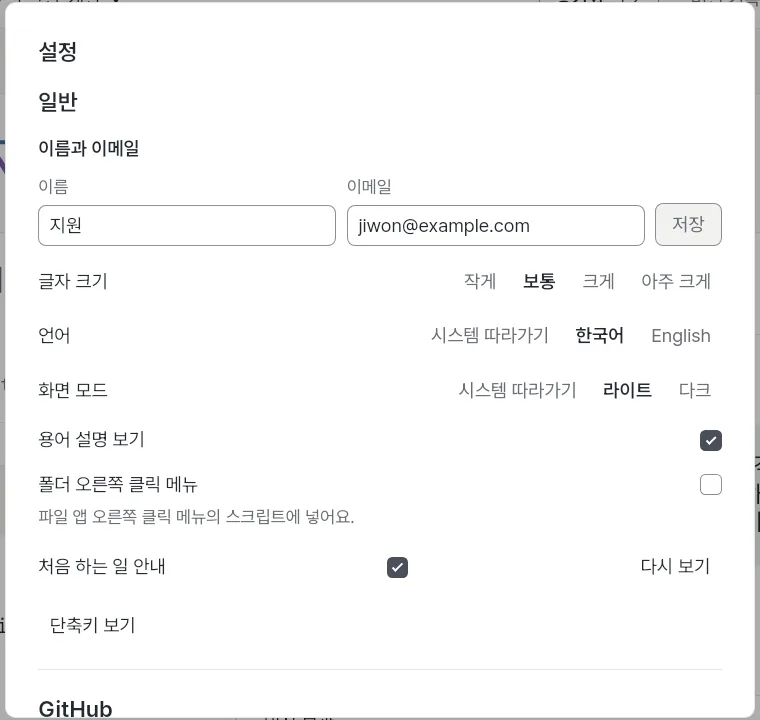
14. 단축키 표
Ctrl+/를 누르면 어디서나 단축키 표가 열려요. Ctrl+K로 명령 찾기를 열면 할 일을 이름으로 찾아 바로 할 수 있어요.
| 할 일 | 단축키 |
|---|---|
| 버전 저장 | Ctrl+Enter |
| 되돌리기 · 다시 하기 | Ctrl+Z · Ctrl+Shift+Z |
| 버전 기록 · 작업 내역 | Ctrl+H · Ctrl+Shift+H |
| 브랜치 목록 · 동기화 | Ctrl+B · Ctrl+Shift+S |
| 폴더 열기 · 복제 | Ctrl+O · Ctrl+Shift+O |
| 명령 찾기 · 단축키 표 | Ctrl+K · Ctrl+/ |
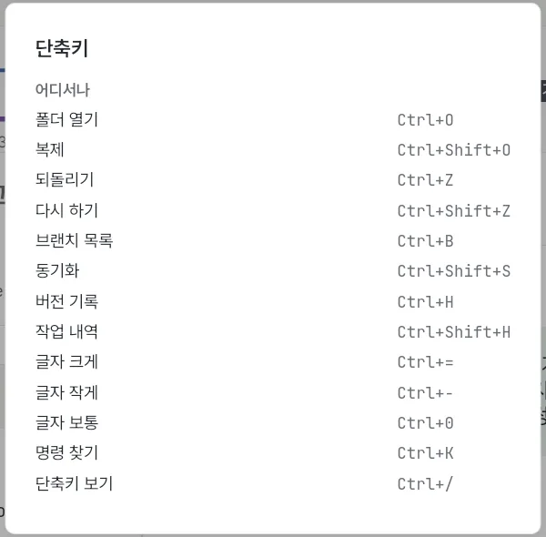
15. 자주 묻는 것
- "믿고 열기"와 "끄고 열기"를 묻는 창이 떠요.
- 받은 프로젝트에 열 때 프로그램을 실행하거나 올리는 곳을 바꾸는 설정이 있으면 물어요. 어디서 받았는지 모르면 끄고 열기를 고르세요. 끄고 열면 그 설정은 돌지 않고, 올리는 곳을 바꾸는 설정이 있으면 동기화도 하지 않아요.
- 되돌리기가 안 된다고 해요.
- 앱 밖에서 Git을 써서 기록이 바뀌었거나, 이미 올린 버전이면 그래요. 작업 내역에서 그때 모습을 찾아 되살릴 수 있어요.
- "원격 확인 못 함"이 보여요.
- 인터넷 연결이나 GitHub 로그인을 확인해 주세요. 알림의 단추로 다시 해 볼 수 있어요.
- 버전과 파일은 어디에 있나요?
- 모두 그 프로젝트 폴더 안에 있어요. hiGit을 지워도 프로젝트와 기록은 그대로예요.
- 문제가 생기면 어디에 알리나요?
- 저장소의 Issues에 알려 주세요. 보안 문제는 SECURITY.md의 비공개 신고를 써 주세요.